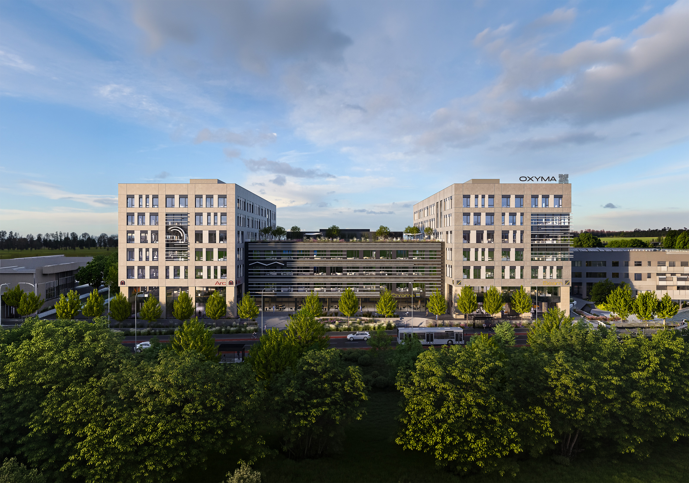
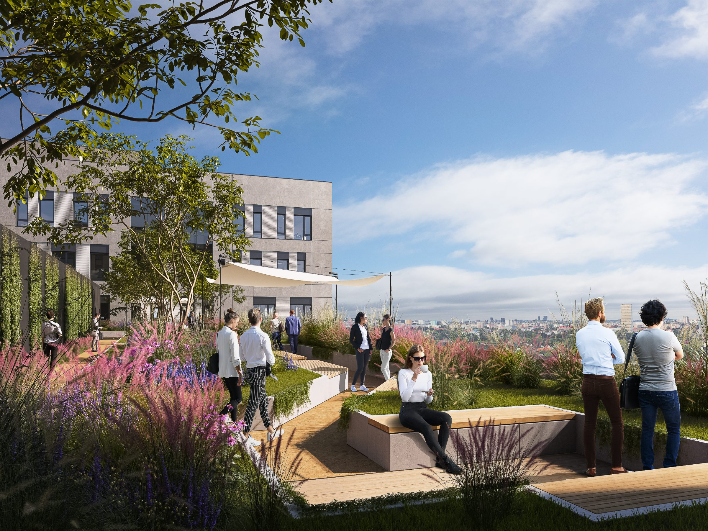
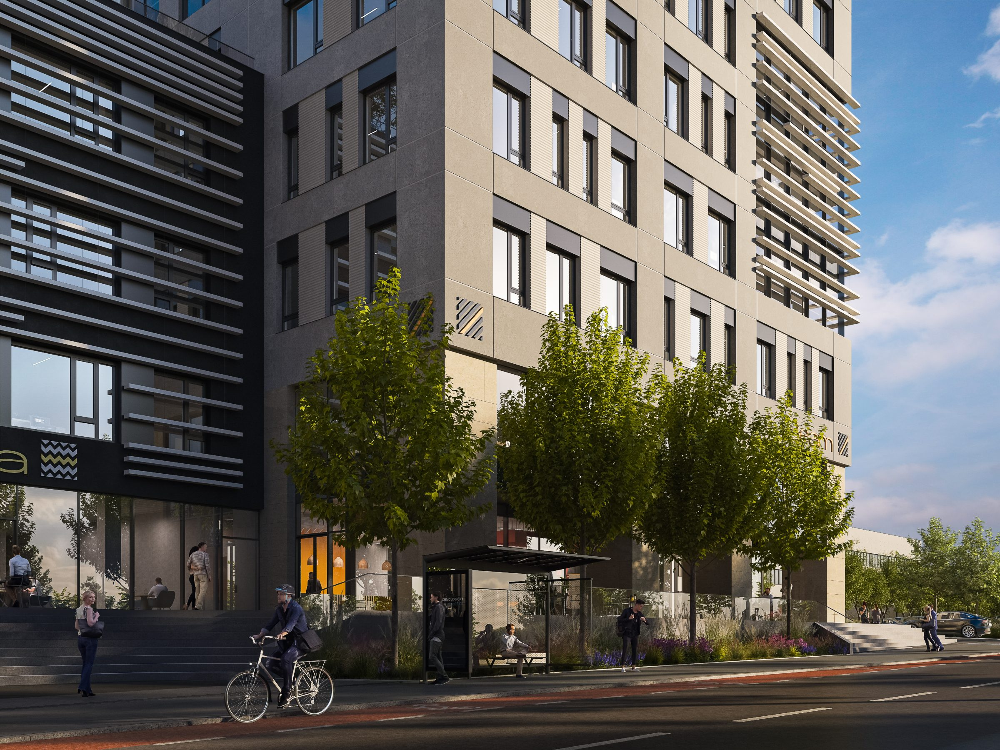

V pražských Malešicích vyrůstá nové technologické centrum OXYMA. Jedinečné prostory v rámci Prahy, které nabídnou nájemcům až 25 000 m² pro administrativu, vývoj, testování i malou výrobu.
Celý areál je od samého počátku navržen jako moderní technologický ekosystém připravený na budoucí nároky firem s důrazem na energetickou stabilitu, udržitelnost, vysokou konektivitu a spolehlivý provoz i pro technologicky náročné projekty.
Technologické centrum OXYMA se stane vstupní branou do vznikajícího Technologického parku Malešice, nové pražské lokality zaměřené na inovace, vývoj a moderní technologie. Území navazuje na tradiční technologický a průmyslový charakter Malešic a postupně vzniká jako moderní prostředí pro technologické firmy, výzkum, vývoj i výrobu. Rozvoj celé oblasti podporuje také dlouhodobá urbanistická strategie hlavního města Prahy.
OXYMA je navržena pro potřeby moderních technologických firem, jejichž růst vyžaduje více než jen kancelářské prostory. Nabídne flexibilní zázemí pro administrativu, vývoj, laboratoře i malou výrobu a propojí startupy, etablované technologické společnosti i studenty. Sdílené laboratoře, multimediální sály a dílny vytvoří prostředí, které podpoří spolupráci, inovace i efektivní rozvoj nových projektů.

50.0755° N
Praha 10